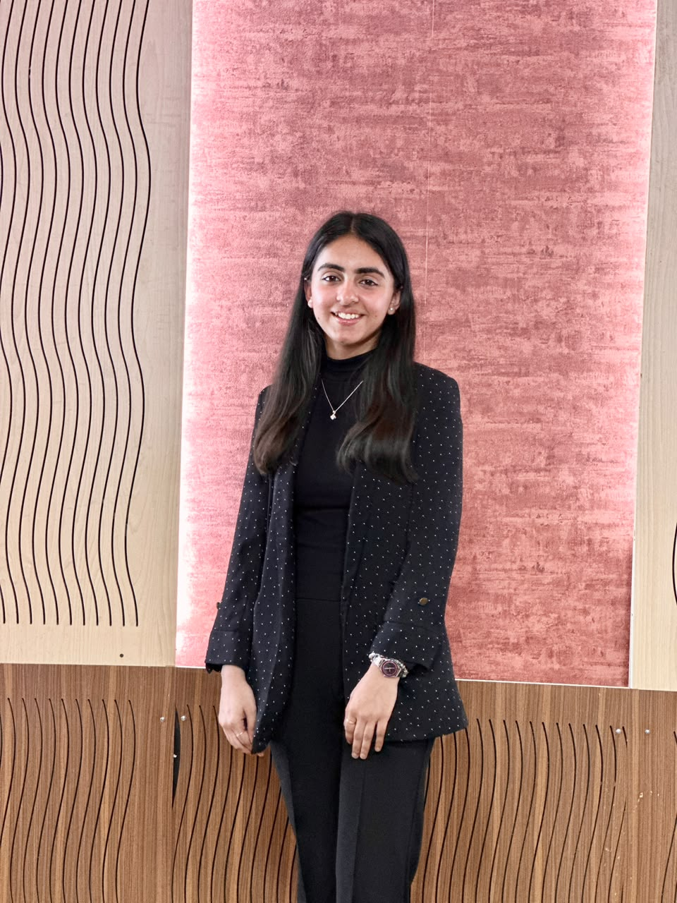
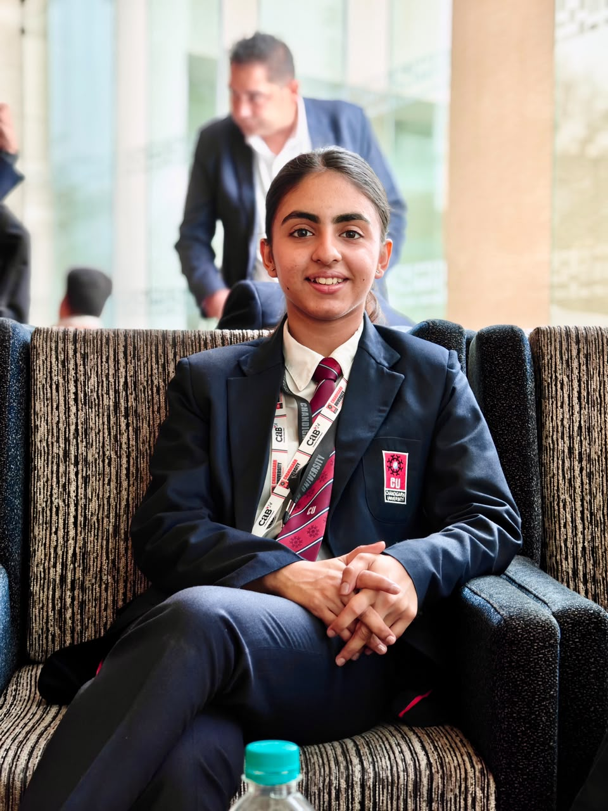
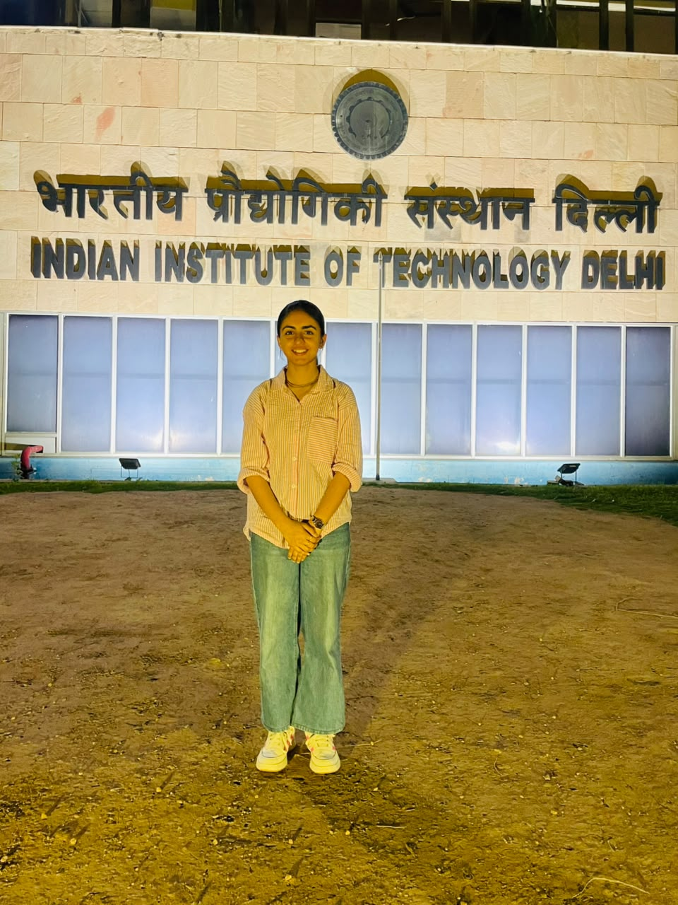
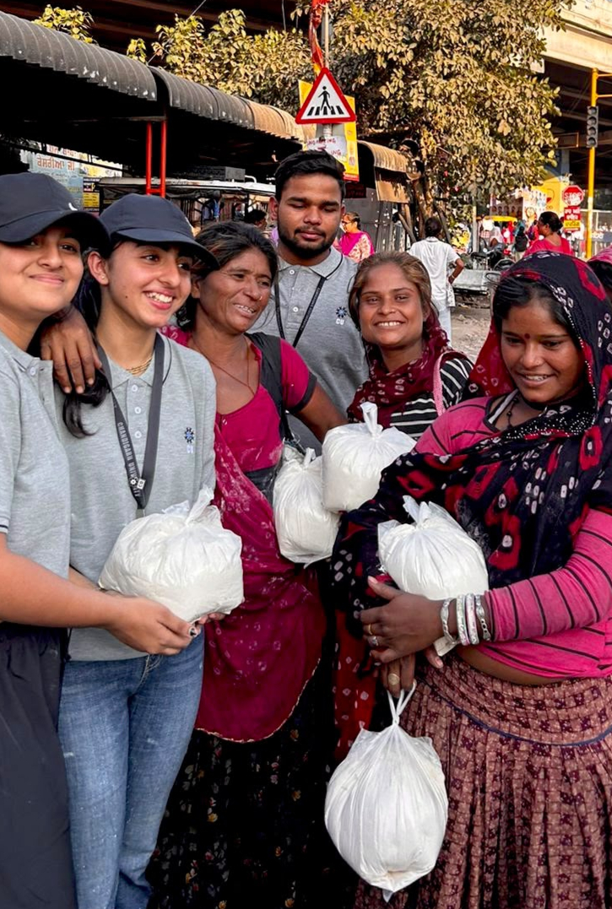
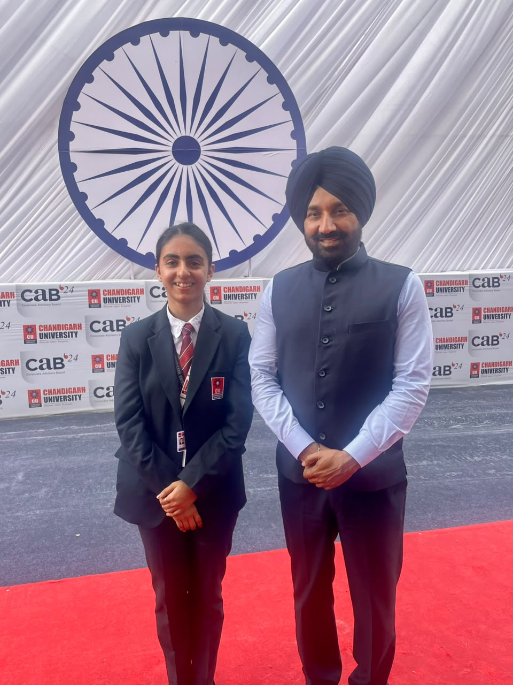
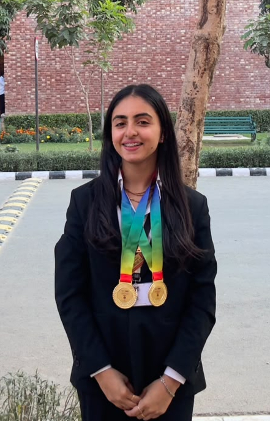
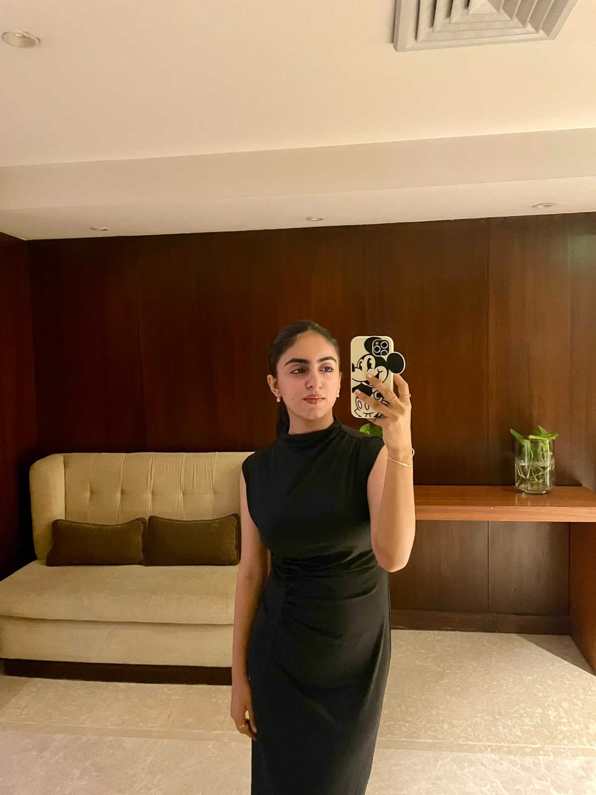
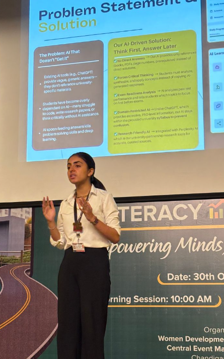
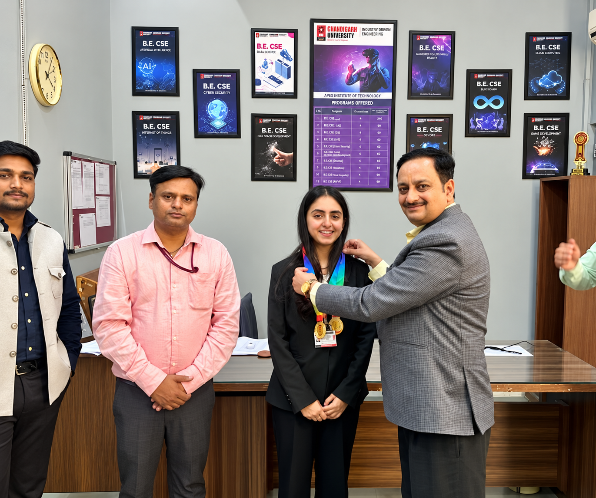

Exemplary Achiever
Chandigarh University · 2026Recognised in April 2026 for continued growth and achievement.
CSE (AIML) undergraduate at
Chandigarh University

Data Science Engineer | Chandigarh University
Skills
 Python
Python SQL
SQL Machine Learning
Machine Learning NLP
NLP Data Analysis
Data Analysis OpenCV
OpenCV C++
C++ ExcelPandas
ExcelPandas NumPy
NumPy Scikit-learnTensorFlow
Scikit-learnTensorFlow PyTorch
PyTorch Matplotlib
Matplotlib Power BI
Power BI Tableau
Tableau Jupyter
Jupyter Git
Git Docker
Docker FastAPI
FastAPI Streamlit
Streamlit PostgreSQL
PostgreSQL MongoDB
MongoDB Hugging Face
Hugging Face01 — About me




I’m Bhumi Kapoor — a technology enthusiast, researcher, builder, problem-solver, communicator, and now, a founder.
Let’s build something ↗


I’m Bhumi Kapoor, born and raised in Amritsar, Punjab, and currently pursuing a B.E. in Computer Science Engineering (AI & ML) at Chandigarh University.
I work where technology meets real-world growth—across data science, analytics, machine learning, web development and automation. From international projects to startup collaborations, I help turn ideas into focused products, sharper workflows and meaningful outcomes. I also founded Webstell Studio — check it out ↗.
I enjoy the thinking that happens before a solution is built: listening closely, structuring messy requirements, finding the right data or product approach, and translating it into something useful for customers and teams.
Beyond technology, I’ve contributed to multiple NGOs and community initiatives. Chandigarh University’s administration has recognised and honoured my academic, leadership and extracurricular work on multiple occasions.
I’m curious by nature. I love learning and taking responsibility, even outside my comfort zone. Give me something worth solving, and I’ll learn what I need to learn to solve it.
Experience
Research, products and client work—turned into practical outcomes.
Founded Webstell Studio, guiding business analysis and delivery for websites, AI chatbots and workflow systems. I translate client needs into focused scopes, coordinate execution, and shape practical digital products. Visit Webstell ↗
Entrepreneurship · AI automation · Digital productsContributed to Samsung PRISM research across Hindi, Urdu and Punjabi, focusing on spoken language identification, dataset preparation and model evaluation for robust speech AI systems.
Speech AI · NLP · Dataset development · LeadershipBuilt and qualified leads, understood client requirements, and supported project conversations from first contact through follow-up—helping turn business needs into actionable digital solutions.
Business development · Client solutionsDelivered hands-on Python and machine-learning sessions, combining practical coding exercises, project guidance and structured problem-solving for students.
Python · Machine learning · MentoringLed day-to-day operations across Teen Show Agency and STUSHE, coordinating people, client communication, timelines and deliverables to keep fast-moving work organised and on track.
Operations · Management · CommunicationManaged social presence and customer-facing communication, shaping content plans and digital strategy while supporting consistent, audience-focused brand activity.
Design · Content · Social mediaSupported marketing, customer experience and international brand work across NIKKI.k, Picaro, Sol + Sonder and Ivyleague—strengthening an adaptable, people-first approach to delivery.
Customer experience · Marketing · International work04 — The project shelf
Explore a card for the story behind the work. 7 projects
05 — Achievements & awards
Recognition is a reminder to keep learning — and to bring others along.
Drag the photos to rearrange · or focus a photo and use arrow keys
Recognised in April 2026 for continued growth and achievement.
A second consecutive year of recognition across the 2025–2026 journey.
DriveSense — IIT Delhi & Delhi Incubator.
Gujarat government support in the Underwater Submarine category.
An EdTech idea brought to life with Prabhmannat Singh and Arnav Hooda.
Recognised for internships, practical learning, certifications and extracurricular involvement.
Recognition from Chandigarh University leadership.
1st in the Tele-Automobile research paper competition; 3rd at Thapar’s Innovation Hackathon; recognised by SRM for hosting IEEE Final HIZE.
From speech AI to connected systems, a space for deeper thinking.
08 — People & collaboration
The people beside the work matter just as much as the work itself.
Draft testimonials — sample wording for review, not approved endorsements.
Bhumi brings clarity to the messy part of building. She asks the right questions, connects the technical work to the bigger picture, and takes ownership of moving things forward.

how do you keep
so many ideas moving?
Working with Bhumi feels collaborative from the start. She communicates her ideas clearly, listens to feedback, and keeps the team focused on making something genuinely useful.

From understanding the problem to working through the details, Bhumi brings curiosity and care to the process. She makes space for different perspectives and keeps learning as the work evolves.
Have a challenge worth solving? I’m open to AI, automation, research, product and business opportunities.
Let’s talk ↗
Technology is powerful.